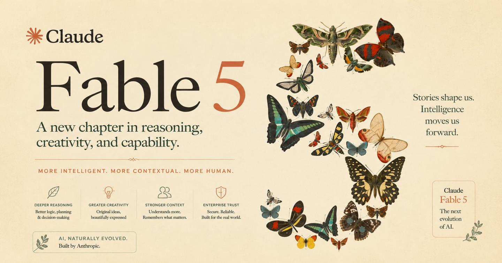
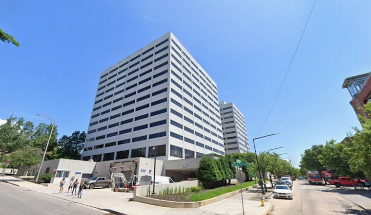
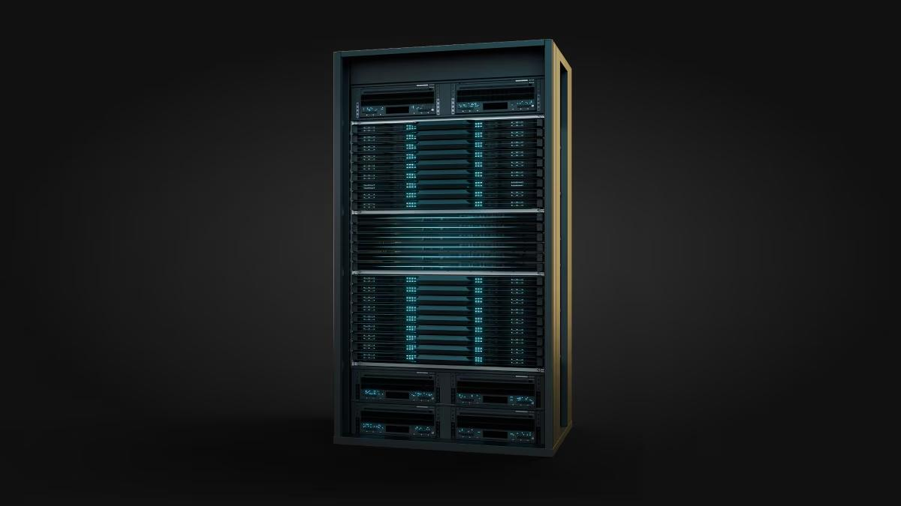
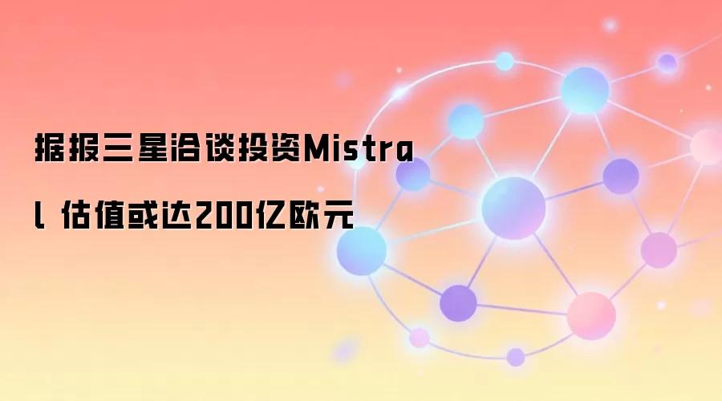
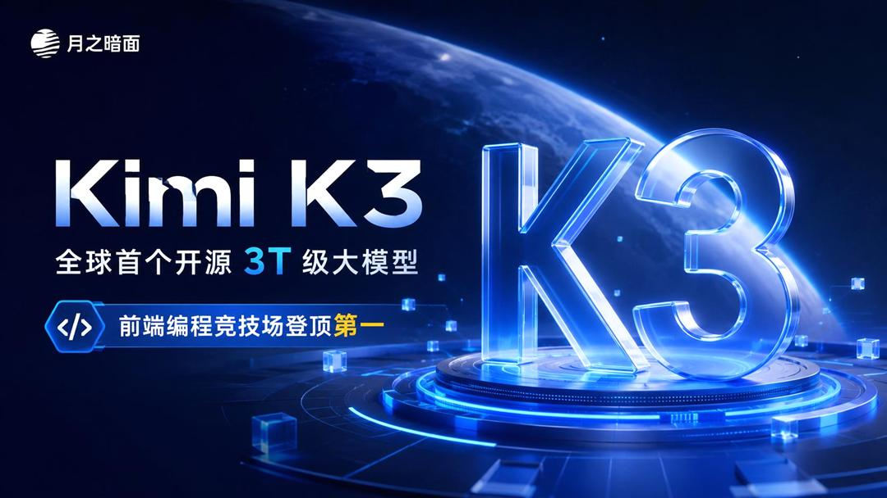
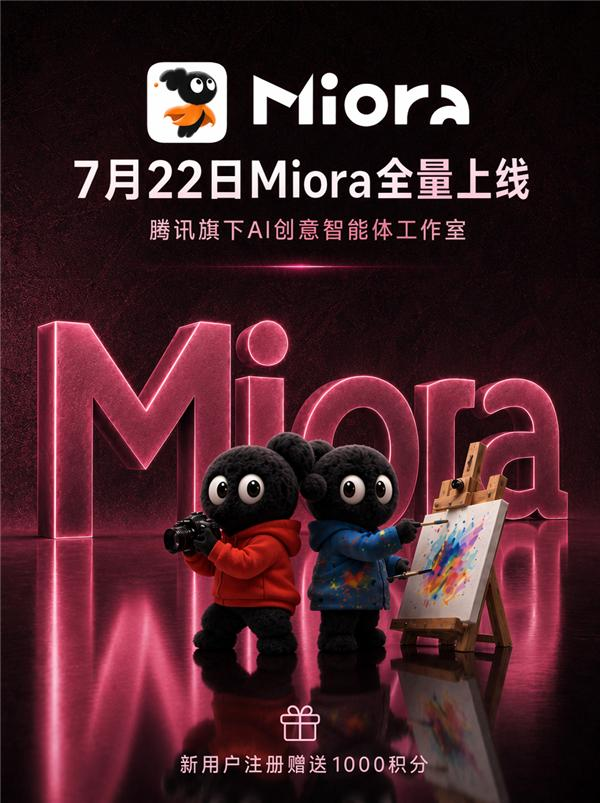
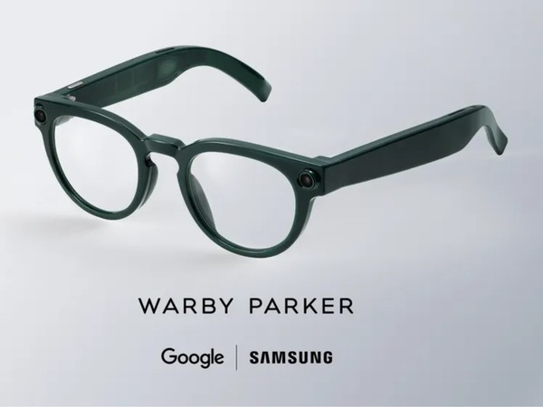

过去 48 小时 AI 圈最值得关注的动态 · 点标题可看原文

金主翻脸：据CNBC拿到的讲话记录，微软CEO纳德拉在工程师内部会议上公开吐槽Anthropic的Fable 5——"你用Fable的时候，它会因为各种莫名其妙的原因拒绝你。上一次你用一个被编辑控制的创作工具是什么时候？这说不通。"尴尬的是，微软刚承诺向Anthropic投50亿美元，Anthropic还背着300亿美元的Azure算力采购大单。
话里有话：纳德拉还补了一刀："不可能全世界只有两家公司拥有token资本，其他所有人都在租用。"——明摆着对OpenAI和Anthropic双寡头格局不满。这是微软入股Anthropic以来，CEO首次公开炮轰其产品策略。
背景补一刀：Anthropic其实认账——7月1日Fable因美国出口管制短暂停服后恢复，公司自己警告过"新的防护机制可能误伤更多正常请求"，部分涉及大规模模型开发的提问甚至会被导流到老模型。安全和发展怎么平衡，这次连最大的金主都坐不住了。

祸不单行：田纳西大学研究基金会周一在特拉华州联邦法院起诉Anthropic，指控其侵犯两项神经网络专利（美国专利号10,019,470和10,095,718），诉状周二公开。据路透社确认，这是Anthropic成立以来第一次被专利侵权起诉。
打的是七寸：这次告的不是训练数据版权，而是模型底层的神经网络架构——专利来自该校TENNLab实验室（2014年起研究类脑计算），诉状点名Anthropic的智能体编程工具Claude Code及其底层软件架构。基金会措辞很狠：Anthropic"对他人知识产权的轻慢态度，早已不限于版权素材"。
时机微妙：就在几天前，加州法官刚批准Anthropic与作家群体的15亿美元盗版图书和解案（美国版权史上最大和解）。版权案刚落地，专利案又上门，Anthropic成了"AI法律雷区到底在哪"的活标本。基金会要求赔偿加禁令，案子走向可能影响整个行业的技术路线。

首款机架级产品：AMD与微软7月20日宣布扩展战略合作——Azure将大规模部署AMD首款机架级AI系统Helios：单柜72颗Instinct MI455X加速卡、第六代256核EPYC Venice CPU、31TB HBM4显存，配完整ROCm开源软件栈，2026下半年开始发货。
微软给足排面：Azure将基于Helios上线ND MI455X v7、HDv2、HXv2三个全新虚拟机系列，深度适配Azure Foundry。微软Azure基础设施负责人Scott Guthrie放话："AI负载的扩张速度，已经超过任何单一基础设施方案能支撑的范围。"
不只微软：Meta、OpenAI、甲骨文也已确认批量采购。就在英伟达Vera Rubin官宣量产的同一周，AMD用最直接的方式回击——CUDA之外的第二条路，这次是大厂真金白银投票。

FT爆料：英国《金融时报》周三报道，三星正洽谈参与Mistral新一轮融资——本轮计划募集约30亿欧元，估值约200亿欧元，较去年9月C轮的117亿欧元接近翻倍。三星的支票金额各方口径在"数亿欧元到约10亿欧元"之间，双方均未证实。
三星图什么：表面是财务投资，实际是生意——三星的HBM高带宽内存是AI算力军备竞赛的最大受益者之一，入股一家欧洲头部模型公司，等于在自己供货的市场里再钉下一颗软件端的钉子。
Mistral的局：C轮时荷兰光刻机巨头ASML砸13亿欧元成了最大股东，本周刚和微软签下数十亿美元算力大单，D轮又有三星排队——创始人Mensch公开说过要自研芯片摆脱对英伟达的依赖，股东名单里有个内存巨头正好用得上。这轮融资若落地，Mistral累计股债融资将达约65亿欧元。

坐火箭的估值：据彭博社报道，月之暗面计划8月启动赴港上市前最后一轮融资谈判，目标投前估值500亿美元——不到一年前这个数字还是43亿美元，一年十倍。当前这轮融资（投前约315亿美元）预计未来几天内交割，之后立即启动新一轮。
港股倒计时：公司已向投资人发送IPO相关方案，最快6个月内完成港股上市。要知道半年前杨植麟还在内部信里说"短期不着急上市"——Kimi K3发布后的市场爆发，显然改变了一切。
行业坐标：国内大模型创业公司里，月之暗面累计融资已超376亿元人民币，是拿钱最多的一家。500亿美元若谈成，中国AI独角兽的估值天花板将被再次抬高。

首个自研创意智能体：腾讯旗下AI创意智能体工作室Miora（妙境）7月22日全量上线国际版——用户只要一句话或一份需求描述，它就自动拆解任务，调度图片、视频、3D、UI等专家智能体协同作业，直接交付一整套创意作品。
技术底子：基于与WorkBuddy同源的多Agent架构，覆盖品牌设计、影视创意、电商广告、互动活动、网页应用等场景，新用户注册送1000积分（官网miora.design）。
大厂卡位：创意生产这条赛道，字有即梦、快手可灵、阿里有通义万相，腾讯这次用"智能体工作室"的形态进场——不卖单个素材，卖整套交付，打的是乙方生意。

明确的取舍：伦敦Galaxy Unpacked发布前夕，Android Authority拿到完整规格——Galaxy Glasses没有屏幕、没有AR显示，就是一副"长得像普通眼镜的AI穿戴"：高通骁龙AR1 Gen 1芯片（和Meta雷朋同款）、运行Android XR系统、靠谷歌Gemini实现视觉感知，由三星联合谷歌、Warby Parker、Gentle Monster共同打造。
续航账：机身电池155mAh，单次最长9小时，充电盒能再充7次。但别被9小时骗了——媒体实测推演：连续录像大概只有30-45分钟，实时翻译更费电。轻使用一天够，AI重度使用得悠着点。
待解的悬念：爆料之间也有打架的地方——最新规格说左右镜框各一颗摄像头，但三周前GSMArena的版本是单颗1200万像素索尼IMX681加隐私指示灯。到底几颗摄像头、卖多少钱，就等发布会揭晓了。Meta雷朋垄断的AI眼镜市场，终于来了个重量级对手。
本期全部引用来源，方便多方查证
本报告由 AI 检索公开信息整理生成，内容仅供参考，请以原始来源为准
生成时间：2026年7月22日 · AI 圈实时雷达
点个赞鼓励一下吧 ✨
💬 评论交流